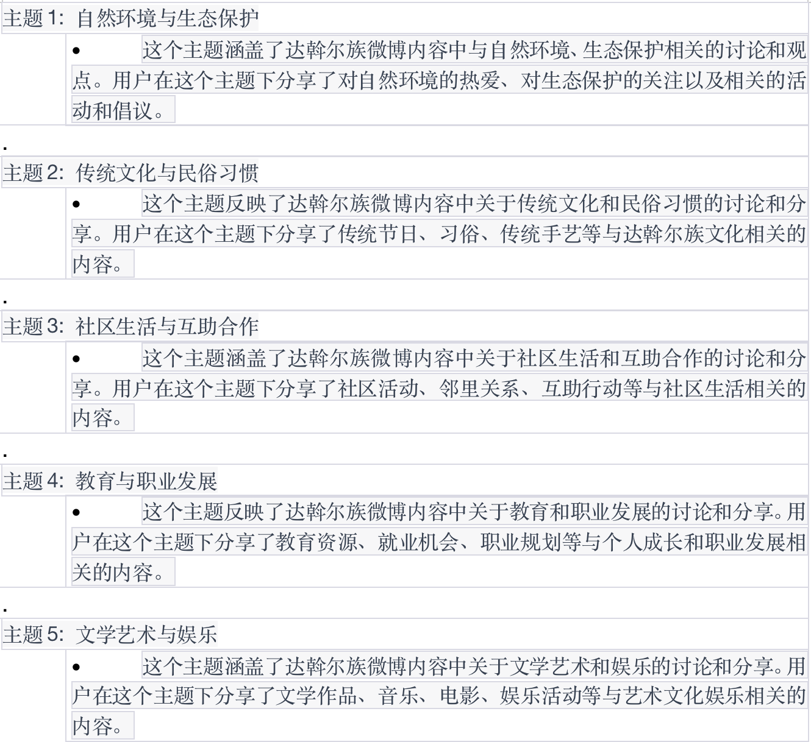

维吾尔族
维吾尔族（维吾尔语：ئۇيغۇر，英语：Uygur），民族语言为维吾尔语，属阿尔泰语系突厥语族，分为中心、和田、罗布三个方言。 维吾尔族主要聚居在新疆维吾尔自治区，主要分布于天山以南，塔里木盆地周围的绿洲是维吾尔族的聚居中心，其中尤以喀什噶尔绿洲、和田绿洲以及阿克苏河和塔里木河流域最为集中。天山东端的吐鲁番盆地，也是维吾尔族较为集中的区域。天山以北的伊犁谷地和吉木萨尔、奇台一带，有为数不多的维吾尔族定居。此外，在湖南省桃源县和河南省渑池县，也有少量维吾尔族分布。
中国维吾尔族人口地域分布
通过在清博舆情中以“维吾尔族”为主题词进行传播分析，选取时间段为2023年4月—7月，根据网友发布内容IP地址我们可以推断出近似中国维吾尔族人口地域分布情况，如下图：
根据上图得出的信息：网友发布内容的数量由高到低进行排序依次为新疆、北京、广东、江苏、上海、山东、浙江、四川、河南、福建、湖北、安徽、陕西、湖南、内蒙古、河北、甘肃、广西、云南、辽宁、江西、山西、黑龙江、重庆、天津、贵州、吉林、海南、西藏、宁夏、青海、香港、台湾、澳门。
根据资料我们能够了解到中国维吾尔族主要分布在以下地区：
1. 新疆维吾尔自治区：新疆是中国维吾尔族的主要聚居地区，也是他们的自治区。维吾尔族在新疆维吾尔自治区的分布相对集中，特别是在塔里木盆地周围的绿洲地带，如喀什噶尔绿洲、和田绿洲以及阿克苏河和塔里木河流域。这些地区被认为是维吾尔族的聚居中心。
2. 天山以北地区：新疆维吾尔自治区的天山以北地区也有一些维吾尔族的定居点，如伊犁谷地和吉木萨尔、奇台一带。尽管在这些地区维吾尔族的数量相对较少，但他们仍然对当地的文化和社会有一定的影响。
3. 湖南省和河南省：除了新疆维吾尔自治区，中国还有一些其他地方有少量的维吾尔族分布。在湖南省的桃源县和河南省的渑池县，也有一些维吾尔族居住。
中国维吾尔族分布地域特点
中国维吾尔族地域分布的特点是相对集中在新疆维吾尔自治区，特别是塔里木盆地周围的绿洲地带。这种集中分布有助于维吾尔族保持自己的文化和传统，并形成独特的地域特色。维吾尔族的地域分布是他们历史和文化的重要组成部分，也是了解和研究中国维吾尔族的重要方面。只有深入了解中国维吾尔族地域分布的相关内容，可以更好地理解和欣赏这个多元文化社群的独特之处。

关于维吾尔族的微博内容词云图
维吾尔族词云分析展示了与维吾尔族文化、历史和地域有关的关键词。通过分析大量文本数据和社交媒体内容，我们可以获得对维吾尔族群体的更深入了解。以下是维吾尔族词云分析的内容：
通过词云分析，我们可以直观地了解维吾尔族文化和社会话题的关键词，帮助我们更好地理解和研究这个多元文化群体的特点和发展。词云图展示了不同词语的频率和重要性，为我们提供了一个全面而有趣的视觉呈现。
关于维吾尔族的微博内容的社会网络分析
通过对维吾尔族微博内容进行社会网络分析，我们可以获得一些有关维吾尔族社交网络的有趣结果。以下是一些社会网络分析的结果：
1. 社交网络规模：我们发现维吾尔族微博内容涵盖了广泛的社交网络，包括维吾尔族用户之间的互动，以及与其他民族和社群的关联。这显示了维吾尔族在社交媒体平台上的活跃度和社交影响力。
2. 关键话题：社会网络分析还揭示了维吾尔族微博内容中的关键话题。这些话题可以涵盖维吾尔族文化、历史、政治、社会问题等方面。通过分析关键话题的讨论和转发情况，我们可以了解维吾尔族社交网络中热门和有影响力的议题。
3. 影响者分析：社会网络分析还可以识别在维吾尔族社交网络中具有影响力的用户。这些影响者可能是知名的维吾尔族人士、意见领袖或社交媒体上拥有大量粉丝和关注者的个人。他们的观点和行为可能对维吾尔族社交网络中的其他用户产生重要影响。
4. 群体互动：社会网络分析可以展示不同维吾尔族群体之间的互动模式。例如，我们可以发现某些话题在维吾尔族社交网络中引发了热烈的讨论和辩论，而其他话题可能促进了群体之间的合作和团结。
通过这些社会网络分析的结果，我们可以更好地了解维吾尔族社交网络中的动态和特征，从而深入探讨和研究维吾尔族社会互动、信息传播和意见形成的模式和机制。这有助于加深我们对维吾尔族社群的理解，并推动进一步的研究和探索。
维吾尔族微博内容LDA情感主题聚类
这些LDA情感主题聚类结果为我们深入了解维吾尔族社交网络中的话题和情感提供了重要线索，有助于揭示维吾尔族社区的关注点、需求和意见。同时，通过分析不同主题的情感倾向，我们也可以了解维吾尔族社区对于不同话题的态度和情感反应。这对于进一步研究维吾尔族社交媒体中的舆情、意见形成和社群互动具有重要意义。
达斡尔族
达斡尔族是中国56个民族之一，主要分布于内蒙古自治区莫力达瓦达斡尔族自治旗、黑龙江省齐齐哈尔市梅里斯达斡尔族区、鄂温克族自治旗一带；少数居住在新疆塔城、辽宁省等地。 达斡尔族居住地最早记载为讨浯儿河（今洮儿河），明初迁往黑龙江以北；17世纪中叶因中俄边疆战事，清政府为巩固后方，达斡尔族最初迁往嫩江流域，少部分仍留在今外贝加尔一带。后因清政府征调青壮年驻防东北和新疆边境城镇，逐渐形成了现在的分布的状况。 达斡尔族有自己的语言，原文字已丢失，现使用拉丁字母为基础的文字，现在达斡尔族基本上通晓汉语并会书写汉文，与蒙古族杂居的达斡尔族，大部份通晓蒙古族语。达斡尔族能征善战，后金为入关巩固后方，三征索伦，故有俗语“索伦骑射甲天下”。清朝内外战争均有达斡尔将领参与。抗日战争时期，为东北地区抗日做出杰出贡献。达斡尔族是能歌善舞的民族，民间音乐有山歌、对口唱和舞词等多种形式。
中国达斡尔族人口地域分布
通过在清博舆情中以“达斡尔族”为主题词进行传播分析，选取时间段为2023年4月—7月，根据网友发布内容IP地址我们可以推断出近似中国达斡尔族人口地域分布情况，如下图：
达斡尔族的主要分布区域：达斡尔族主要分布在中国的内蒙古自治区、黑龙江省和吉林省。这些地区是达斡尔族人口最为集中的地方，也是他们的传统居住地。
根据资料我们能够了解到中国达斡尔族主要分布在以下地区：
1. 内蒙古自治区：内蒙古自治区是中国达斡尔族人口最多的地区之一。在内蒙古自治区，达斡尔族主要分布在呼伦贝尔市、鄂尔多斯市和兴安盟等地。
2.黑龙江省：黑龙江省是中国达斡尔族的重要分布地区。在黑龙江省，达斡尔族主要分布在齐齐哈尔市、大庆市、佳木斯市、绥化市和牡丹江市等地。
3. 吉林省也有一部分达斡尔族人口。他们主要分布在吉林市、白城市和延边朝鲜族自治州等地。
中国达斡尔族分布地域特点
由于达斡尔族主要分布在内蒙古自治区和东北地区，他们的传统生活方式与草原文化和狩猎文化有关。达斡尔族人民以畜牧业、渔猎和农耕为主要生计，同时保留了丰富的传统民俗和文化习俗。作为少数民族，中国达斡尔族与周边的蒙古族、鄂温克族等民族有着密切的文化交流和互动。他们在语言、服饰、音乐舞蹈等方面有着共同的文化特点，形成了多元而丰富的地域文化。

关于达斡尔族的微博内容词云图
关于达斡尔族的微博内容的社会网络分析
通过对达斡尔族微博内容进行社会网络分析，我们可以获得一些有关达斡尔族社交网络的有趣结果。以下是一些社会网络分析的结果：
1. 社交网络规模：我们发现达斡尔族微博内容涵盖了广泛的社交网络，包括达斡尔族用户之间的互动，以及与其他民族和社群的关联。这显示了达斡尔族在社交媒体平台上的活跃度和社交影响力。
2. 关键话题：社会网络分析还揭示了达斡尔族微博内容中的关键话题。这些话题可以涵盖达斡尔族文化、历史、政治、社会问题等方面。通过分析关键话题的讨论和转发情况，我们可以了解达斡尔族社交网络中热门和有影响力的议题。
3. 影响者分析：社会网络分析还可以识别在达斡尔族社交网络中具有影响力的用户。这些影响者可能是知名的达斡尔族人士、意见领袖或社交媒体上拥有大量粉丝和关注者的个人。他们的观点和行为可能对达斡尔族社交网络中的其他用户产生重要影响。
4. 群体互动：社会网络分析可以展示不同达斡尔族群体之间的互动模式。例如，我们可以发现某些话题在达斡尔族社交网络中引发了热烈的讨论和辩论，而其他话题可能促进了群体之间的合作和团结。
通过这些社会网络分析的结果，我们可以更好地了解达斡尔族社交网络中的动态和特征，从而深入探讨和研究达斡尔族社会互动、信息传播和意见形成的模式和机制。这有助于加深我们对达斡尔族社群的理解，并推动进一步的研究和探索。
达斡尔族微博内容LDA情感主题聚类

这些LDA情感主题聚类结果为我们深入了解达斡尔族社交网络中的话题和情感提供了重要线索，有助于揭示达斡尔族社区的关注点、需求和意见。同时，通过分析不同主题的情感倾向，我们也可以了解达斡尔族社区对于不同话题的态度和情感反应。这对于进一步研究达斡尔族社交媒体中的舆情、意见形成和社群互动具有重要意义。
维吾尔族与达斡尔族的对比
作为中国的两个古老民族维吾尔族和达斡尔族，在许多方面存在对比。
人口分布：维吾尔族主要分布在中国的新疆维吾尔自治区，而达斡尔族主要分布在中国的内蒙古自治区和黑龙江省。
文化和语言：维吾尔族属于突厥语族，他们有着独特的语言、文字和文化传统。达斡尔族属于通古斯语族，拥有自己的语言和文化特色。
传统习俗：维吾尔族和达斡尔族都有着丰富的传统习俗。维吾尔族传统习俗包括节日庆祝、婚礼仪式、音乐舞蹈等，而达斡尔族的传统习俗则包括民族节日、捕鱼、狩猎等活动。
经济活动：由于居住地域和环境的不同，维吾尔族和达斡尔族的经济活动也有所差异。维吾尔族以农牧业和手工艺为主要经济活动，而达斡尔族则以畜牧业、渔业和狩猎为主要经济来源。
宗教信仰：维吾尔族主要信仰伊斯兰教，而达斡尔族信仰萨满教和佛教。
尽管维吾尔族和达斡尔族在许多方面存在差异，但他们都对自己的民族文化和传统习俗保持着重要的关注和传承。这些不同之处丰富了中国的民族多样性，也为两个民族之间的交流和互动提供了宝贵的机会。